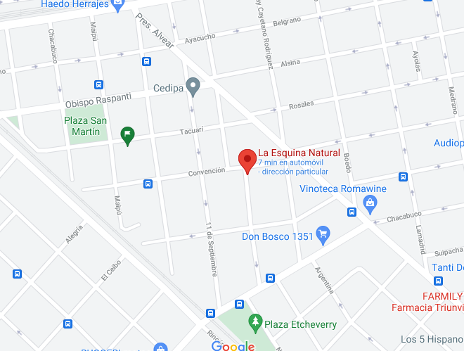
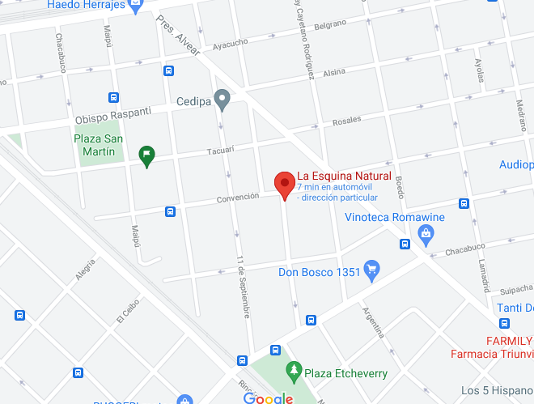

CONOCE DONDE COMPRAR TU GINEVRÉ
Estamos en Argentina, en la zona oeste, para ser mas excatos, Moron, Haedo.
"La Esquina Natural", Gdor. Valentin Vergara 402, Haedo. Provincia de Buenos Aires.
CONOCE DONDE COMPRAR TU GINEVRÉ
Estamos en Argentina, en la zona oeste, para ser mas excatos, Moron, Haedo.
"La Esquina Natural", Gdor. Valentin Vergara 402, Haedo. Provincia de Buenos Aires.
+5491135935469
JUAN IGNACIO LANUARA
Creador y Asesor comercial de Ginevré.
+5491149996192
LA ESQUINA NATURAL
Centro unico de venta al publico.